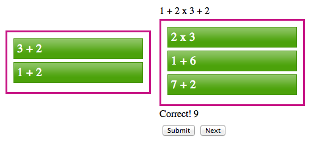

This project is maintained by ecseitz
ALGEflow is a tool I designed for algebra students to practice recognizing the steps required to solve an equation. It is also useful for younger students who are learning about the order of operations in math. This tool makes students actively think about which steps follow each other, and it shows them that each step flows into the next because they are all connected - hence the name ALGEflow. The tool also requires students to show their work in order to complete a problem. ALGEflow can be found online here, but it is still being refined. Click here for specific instructions on using the tool.
As a student teacher, I was in charge of a remedial algebra class. The students often had trouble figuring out which steps to take in solving an algebraic equation. They frequently forgot to perform certain functions on both sides of the equations. The students also were against showing their work, and so it was sometimes difficult to pinpoint where a problem went wrong. I wanted to create a piece of technology that would have helped me in that classroom by getting students used to the idea of showing all of their work and understanding that all of the steps they take are connected.
Each problem in ALGEflow has a set of blocks, an equation, and a canvas area in which to work. The user drags blocks onto the canvas and places them in the correct order for solving the equation. I simply repurposed jQuery UI draggable objects to create the blocks.
Problems can have exactly the right blocks so that the user must use all of them to complete the problem. Or a problem can have too many blocks so that the user must pick and choose which ones are correct.
The first feature that I want to add is simply a box in which the user will type the result. In order to get a problem correct, the user must have the right result and the right order of blocks. This will be simple to add.
The second feature that I want to add will be a little more complex. I would like the equation to change dynamically as each block is placed onto the canvas. In the example above, for instance, after the user places the "2x3" block, the equation would change to say "1+6+2." This feature will make it a little easier for the user because they will not have to keep track of the changes in their head or on paper.